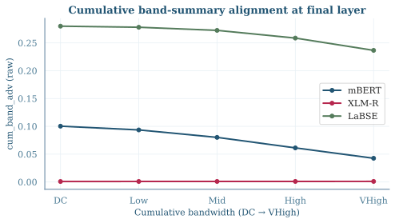
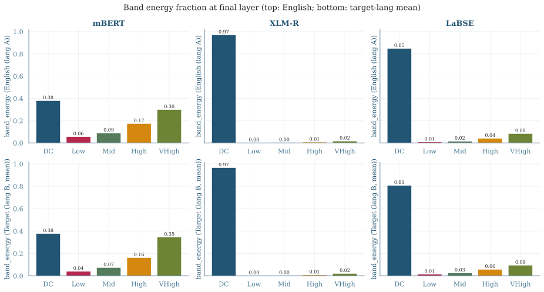

Phase 1a: Spectral Alignment Profiles — mBERT, XLM-R, LaBSE
1 Key Findings
- DC = mean-pool baseline; Low band beats it at middle layers. The DCT DC coefficient equals √n · mean(H), so band_adv[DC] is exactly the translation advantage of standard mean-pool embeddings. In mBERT, Low-band P@1 = 0.798 at L8 vs DC P@1 = 0.741 at L8 — a +5.7pp lead. Against the conventional L12 mean-pool baseline (P@1 = 0.477), Low at L8 outperforms by +32pp (67% relative) with no fine-tuning.
- mBERT L12: alignment concentrates in DC at the final layer. DC band_adv jumps +225% from L10→L12 (0.031 → 0.100) while Low drops −35%. The last transformer block is associated with a shift of alignment structure toward the mean-pooling direction.
- XLM-R anisotropy signature: DC band_energy = 97%, DC band_adv ≈ 0. XLM-R's final layer concentrates 97% of band energy into DC, yet DC band_adv ≈ 0.001 — all blocks share the same mean direction so mean-pool carries zero differential alignment signal. The Low band (0.2% of energy) is XLM-R's primary alignment axis (band_adv=0.030, P@1=0.408 > DC 0.388).
- LaBSE shows the strongest DC alignment (band_adv=0.280), with near-perfect P@1 across all bands. Even VeryHigh band achieves P@1=0.924 at L12, consistent with alignment signal being distributed across the entire representation. This observation complicates the Phase 1b hypothesis that mean-pool training specifically targets DC, since LaBSE uses CLS-pool.
2 Setup
| Model | Training objective | Pool used | DC band_adv (L12) | Best P@1 (any band/layer) |
|---|---|---|---|---|
| mBERT | MLM (no alignment) | — (baseline) | 0.100 | 0.798 (Low, L8) |
| XLM-R | MLM on larger multilingual corpus | — (baseline) | 0.001 | 0.722 (DC, L6) |
| LaBSE | CLS-pool bitext contrastive (billions of pairs) | CLS | 0.280 | 1.000 (DC, L12) |
Corpus: NTREX-128 pilot, 326 parallel blocks per language (en, de, ar, zh, hi, sw), ~100–150 English words/block (~151 mBERT subword tokens). Layers: {0, 2, 4, 6, 8, 10, 12}. All metrics averaged over 5 en→X pairs unless stated.
DC = mean-pool identity: F[:,0] = √n·meant(H[t,:]) ⇒ cos(DCA, DCB) = cos(mean(HA), mean(HB)). Standard mean-pool retrieval used in most multilingual retrieval papers equals band_adv[DC].
--no_skip to invalidate.
3 DC vs Low Band P@1 — Per Language Pair

Figure 1. mBERT DC (=mean-pool) vs Low band P@1 by layer, one panel per language pair. Orange dashed lines mark layers where Low > DC. The sw panel is qualitatively different: DC is poor throughout, and Low provides a large gain at L8 (+26.5pp).
- mBERT: Low at L8 beats L12 mean-pool (P@1=0.477) by +32pp on average, but the effect is highly language-dependent (see table below).
- en-sw is an outlier: DC P@1 = 0.449 at L8 (the lowest across all pairs and layers), while Low reaches 0.715 — a +26.5pp gap. For all other pairs the gap is at most +3.2pp. The sw DC signal is poor throughout all layers, whereas Low provides a consistent fallback. This is consistent with mBERT's limited Swahili training data: Swahili text (Latin-script, agglutinative) likely gets tokenized into many short subword pieces shared with English, making the mean-pool direction non-discriminative, while the Low band captures more content-specific positional variation.
- en-hi and en-zh: Low does not beat DC at L8 (differences: −3.1pp and −0.6pp). DC is the better choice at all layers for these pairs at this model.
| Pair | DC P@1 at L8 | Low P@1 at L8 | Low−DC | DC P@1 at L12 |
|---|---|---|---|---|
| en-de | 0.959 | 0.982 | +0.023 | 0.724 |
| en-ar | 0.765 | 0.798 | +0.032 | 0.469 |
| en-zh | 0.857 | 0.851 | −0.006 | 0.696 |
| en-hi | 0.673 | 0.643 | −0.031 | 0.291 |
| en-sw | 0.449 | 0.715 | +0.265 | 0.202 |
4 DC P@1 by Layer and Language Pair — All Models

Figure 2. DC band (= mean-pool) P@1 across layers, one panel per model, five lines per pair. mBERT: en-de peaks early and high; en-sw is consistently the weakest. XLM-R: all pairs collapse at L12; peak retrieval shifts to L4–L6. LaBSE: saturates to ≥0.95 by L6 for all pairs.
| Layer | mBERT DC | XLM-R DC | LaBSE DC |
|---|---|---|---|
| L0 (embed) | 0.033 | 0.030 | 0.045 |
| L2 | 0.031 | 0.007 | 0.018 |
| L4 | 0.019 | 0.007 | 0.059 |
| L6 | 0.019 | 0.010 | 0.097 |
| L8 | 0.048 | 0.010 | 0.053 |
| L10 | 0.031 | 0.009 | 0.096 |
| L12 | 0.100 | 0.001 | 0.280 |
band_adv values averaged over 5 en→X pairs. LaBSE DC is non-monotonic (dips at L2=0.018 and L8=0.053).
5 mBERT L8: P@1 Profile Across Bands, Per Language Pair

Figure 3. mBERT L8 bidirectional P@1 per band, per language pair. All pairs peak at DC or Low and decline for higher bands. The sw line is anomalously low at DC but recovers to 0.715 at Low, while the other pairs are highest at DC.
- Energy ≠ discriminativeness. band_energy measures signal magnitude; P@1 measures whether that band's direction distinguishes parallel from non-parallel blocks. These are orthogonal: a low-energy band (e.g. Low in XLM-R at 0.2%) can still achieve high P@1 if its direction is informative. Cosine similarity normalises vectors before comparing, so scale is irrelevant to retrieval.
- All pairs drop steeply past Low. Mid, High, and VHigh bands carry positional/syntactic variation that is not consistent across parallel texts, so P@1 falls toward random for those bands.
6 XLM-R Representation Degeneration — A Spectral Diagnosis
See Figure 2 (DC P@1 by layer per pair) for XLM-R's collapse at L12 across all language pairs.
XLM-R band_energy at L12 (English side)
| Band | band_energy | band_adv |
|---|---|---|
| DC | 0.971 | 0.001 |
| Low | 0.002 | 0.030 |
| Mid | 0.003 | 0.012 |
| High | 0.007 | 0.004 |
| VeryHigh | 0.017 | 0.002 |
Interpretation
97% of XLM-R's band energy at L12 lives in DC — every block's hidden states are dominated by a single global "background" direction. Since all blocks share this direction, the mean-pool cosine between any two blocks (parallel or not) is near 1 — the diagonal of the cosine matrix ≈ the off-diagonal, yielding band_adv[DC] ≈ 0.
The Low band holds only 0.2% of the energy, yet it is associated with band_adv = 0.030 (the model's primary alignment axis). The residual after removing the degenerate mean retains meaningful cross-lingual structure.
This suggests a spectral representation-degeneration test: if band_energy[DC] → 1 while band_adv[DC] → 0, the model's representations may have collapsed to a single direction.
7 LaBSE: Alignment Signal Across All Frequency Bands
LaBSE was trained with CLS-pool contrastive learning (not mean-pool), yet it shows the highest DC band_adv and near-perfect P@1 across all bands.
| Layer | DC band_adv | Low band_adv | DC P@1 | Low P@1 | High P@1 | VHigh P@1 |
|---|---|---|---|---|---|---|
| L0 | 0.045 | 0.012 | 0.151 | 0.043 | 0.055 | 0.086 |
| L6 | 0.097 | 0.041 | 0.951 | 0.538 | 0.900 | 0.879 |
| L8 | 0.053 | 0.050 | 0.897 | 0.646 | 0.948 | 0.939 |
| L10 | 0.096 | 0.063 | 0.985 | 0.790 | 0.966 | 0.909 |
| L12 | 0.280 | 0.129 | 1.000 | 0.987 | 0.962 | 0.924 |
8 Cumulative Band Recovery (cum_band_adv)

Figure 7. cum_band_adv at the final layer per model. mBERT and LaBSE: strictly decreasing (DC alone is the optimal concatenation). XLM-R: flat near zero throughout.
For mBERT and LaBSE, adding bands beyond DC consistently reduces cumulative retrieval, because higher-frequency components carry translation-agnostic variance (syntactic/positional patterns that differ between parallel texts). XLM-R's near-zero cum_band_adv at all bands reflects the degenerate DC signal dominating the norm even though Low has independent signal.
| Model | cum_band_adv[DC] | +Low | +Mid | +VHigh | Monotone ↓? |
|---|---|---|---|---|---|
| mBERT | 0.100 | 0.094 | 0.080 | 0.043 | Yes |
| XLM-R | 0.001 | 0.001 | 0.001 | 0.001 | Flat ≈ 0 |
| LaBSE | 0.302 | 0.301 | 0.295 | 0.258 | Yes |
9 Directional P@1 Asymmetry

Figure 4. Per-pair directional P@1 for mBERT Low band across layers. Solid lines = en→tgt; dashed lines = tgt→en. The gap is largest for typologically distant pairs (hi, sw) and narrows for closer ones (de).
Bidirectional P@1 (the mean of both directions) masks a consistent asymmetry: en→tgt retrieval is substantially easier than tgt→en, especially for Hindi and Swahili. Selected values at mBERT L8, Low band:
| Pair | en→tgt P@1 | tgt→en P@1 | Gap |
|---|---|---|---|
| en-de | 0.847 | 0.768 | 0.079 |
| en-ar | 0.801 | 0.625 | 0.176 |
| en-zh | 0.820 | 0.643 | 0.177 |
| en-hi | 0.791 | 0.494 | 0.297 |
| en-sw | 0.847 | 0.583 | 0.264 |
The asymmetry likely reflects that English subword representations are higher-norm (more informative Low-band vectors) than the target language representations, making English queries more discriminative than target-language queries. Reported bidirectional P@1 values are the mean of both directions.
10 Band Energy Distribution

Figure 5. Relative band_energy at L12 (top row: English; bottom row: target-lang mean), per model. XLM-R's DC monopoly (97%) and LaBSE's DC concentration (85%) contrast sharply with mBERT's more distributed profile.
| Band | mBERT band_energy | XLM-R band_energy | LaBSE band_energy |
|---|---|---|---|
| DC | 0.380 | 0.971 | 0.849 |
| Low | 0.056 | 0.002 | 0.008 |
| Mid | 0.089 | 0.003 | 0.016 |
| High | 0.175 | 0.007 | 0.042 |
| VeryHigh | 0.300 | 0.017 | 0.084 |
mBERT has the most distributed energy profile (DC = 38%, VeryHigh = 30%). Both XLM-R and LaBSE are heavily DC-concentrated (97% and 85% respectively), but differ sharply in their band_adv[DC]: XLM-R ≈ 0 vs LaBSE = 0.280. High DC energy is therefore neither sufficient nor necessary for cross-lingual alignment — the discriminativeness of the DC direction matters, not its energy share alone.
11 Interpretation & Implications
Three qualitatively distinct trajectories
- mBERT (MLM-only). Low-band alignment builds across layers 2–10 (peaking at L8 P@1=0.798), then the final layer is associated with a shift toward DC alignment. band_adv[DC] at L12 = 0.100 — moderate but real. The intermediate layer signal is the dominant story.
- XLM-R (stronger MLM). Shows representation degeneration: final-layer DC band_energy = 97% but DC band_adv ≈ 0. The Low band is the primary alignment axis throughout, carrying more signal (P@1=0.408) than DC (0.388) at L12. Best retrieval is at L6 (DC P@1=0.722) before the collapse.
- LaBSE (bitext contrastive). Non-monotonic DC band_adv across layers (dips at L2 and L8), reaching 0.280 at L12. Near-perfect P@1 across all bands and all layers ≥L6. High-frequency alignment signal is observed as a side-effect of the training regime, though the causal mechanism is unclear without ablations.
What this means for Phase 1b
The Phase 1b design (mBERT fine-tuned on NTREX train split, mean-pool vs CLS-pool InfoNCE) should answer: does mean-pool InfoNCE produce the L12 DC spike seen in mBERT base, amplified? And does CLS-pool training produce a LaBSE-style pervasive alignment signature, even at small data scale?
| Phase 1b hypothesis | Supported/challenged by Phase 1a? |
|---|---|
| Mean-pool training specifically aligns DC | Challenged: LaBSE (CLS-pool) has the highest DC band_adv. But confounded by data scale — Phase 1b controls this. |
| CLS-pool training produces different Δband_adv profile | Consistent with LaBSE vs mBERT comparison (all bands aligned in LaBSE, DC-dominant in mBERT). Causal attribution requires Phase 1b fine-tuning. |
| Middle-layer Low band is trainable | Consistent: Low band_adv rises steadily in mBERT with no alignment training. Fine-tuning may amplify this further. |
| XLM-R degeneration can be fixed | A spectral adapter targeting Low band may recover alignment signal that the L12 collapse is associated with. High-priority Phase 2 target. |
Implications for Phase 2 (spectral adapter)
The spectral adapter should target different bands per model:
- mBERT: Low-band adapter at L8, to amplify the naturally emerging Low alignment before the L12 DC shift.
- XLM-R: DC-band adapter at L6 (before the collapse), to recover the mean-pool alignment that degenerates at L12. The spectral diagnosis (band_energy[DC]→1, band_adv[DC]→0) suggests the collapse happens in L10–L12 specifically.
12 Reproduction
# from spectral-probing/
# 1. Embed all 3 models (xlmr and labse via SLURM)
sbatch embed.slurm mbert
sbatch embed.slurm xlmr
sbatch embed.slurm labse
# 2. Metrics for each model
for MODEL in mbert xlmr labse; do
python -m direction2.metrics \
--model $MODEL --pool subword \
--lang_a en --lang_b de ar zh hi sw \
--embed_dir direction2/results/embed \
--out_dir direction2/results/metrics \
--no_skip
done
# 3. Regenerate plots and this report
/u501/x25luo/.conda/envs/grounding/bin/python3 \
direction2/results/report_phase1a/make_plots.py